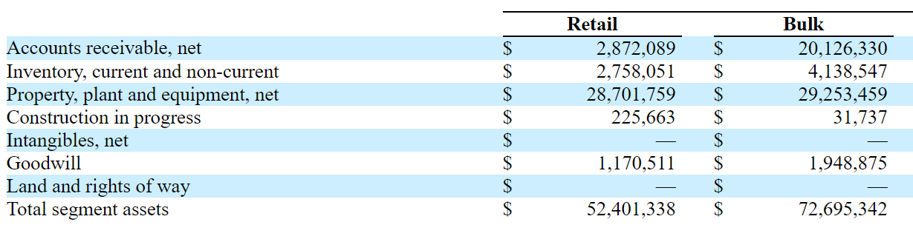
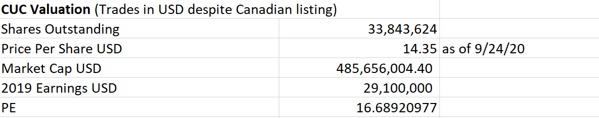
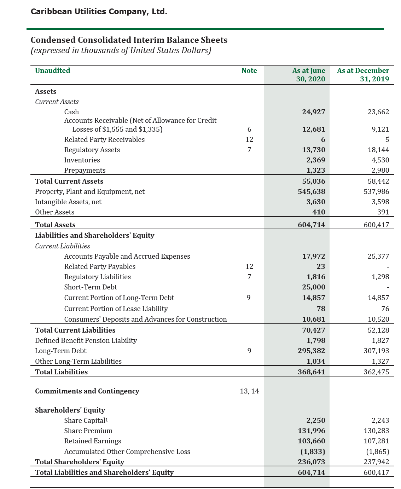
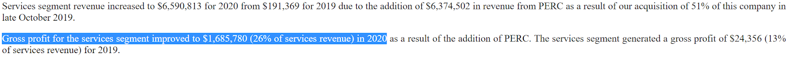
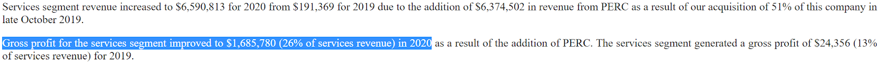
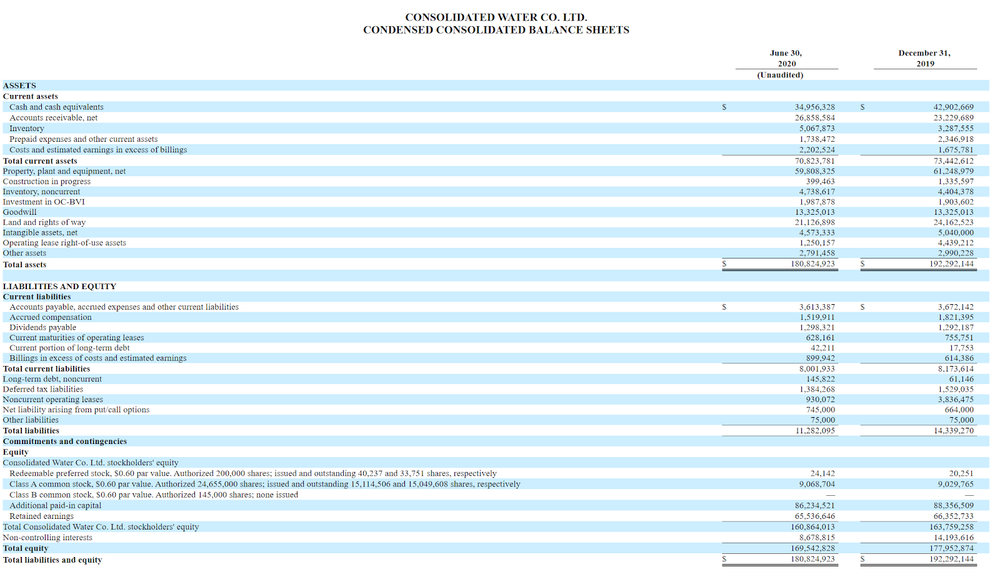
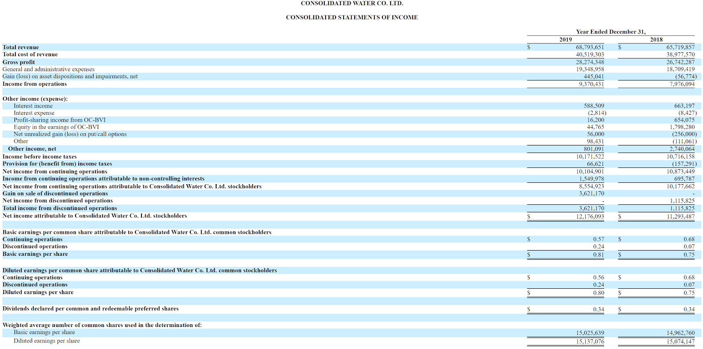
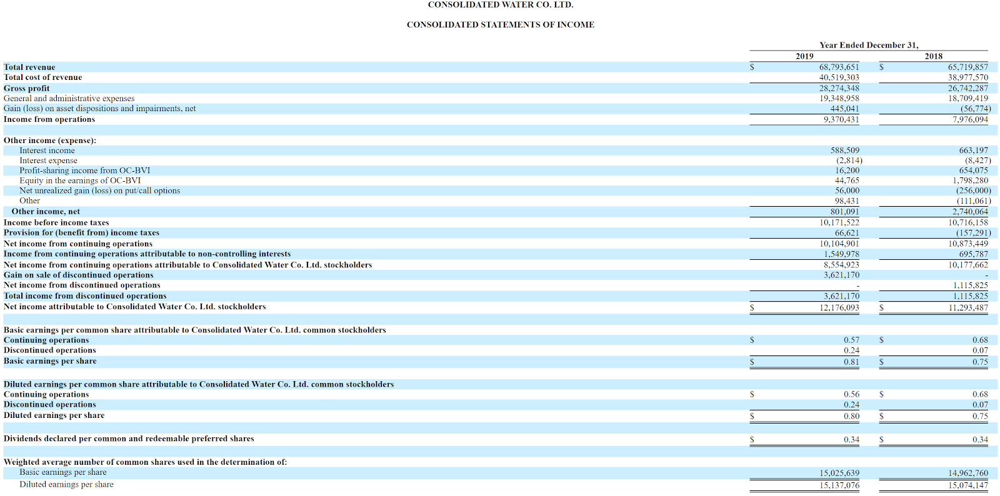

Consolidated Water Company (CWCO)
一个罕见的公用事业行业的投资机会
报告总结
由于公司与监管谈判的过程有巨多不确定性，也因为公司的业务受到疫情带来的重大的负面影响，CWCO的股价从2020年的高峰已经跌了超过40%。CWCO当前的市值仅是10-12倍我预测的2021年的盈利水平。此外，公司几乎没有债务并有足够流动性，因而我认为CWCO应该获得更高市盈率（尤其在当前的国际市场的低利率环境里）。如果公司与开曼岛政府能达成新的服务协议，并且与公司的被取消的项目相关的损失（已经充分地体现在当前的市值里）不再影响损益表时，公司的股价应该实现个较高的市盈率。总的来说，我认为该公司的价值至少被低估了20-30%，并有一个取决于最近被取消的项目的重启的内置的看涨期权。由于公用事业的业务都是比较稳定，我认为股价的下行风险有限，但是上行空间比较大。这样的投资机会在公用事业行业应该是比较罕见的，特别是考虑到最近的整个市场的表现。
公司简介
公司的主要业务是在开曼群岛和一些其他的加勒比海岛提供水务服务。因为在其财务报告中，公司将它所有的间接的管理成本（Indirect SG&A）归于零售水务部门，所以会比较难分析每个细分部门的盈利状况。但是鉴于CWCO收购其他业务部门的低市盈率（将在下文进一步说明），我认为CWCO选着这种会计方式是因为公司正在跟开曼岛政府谈判新的零售水务服务合同，而这个会计方式会降低这部门的书面盈利、减少政府要求降价的空间。那么为了便于分析，在本报告的分析中，我将把公司的零售水务业务和批发水务业务合并为公用水务部门。这两个部门的核心业务都是一样的：公司在海水淡化厂生产淡水，最终产出的水都是交给同类的消费者。此外，这两个部门都受同样因素的影响：淡水的供需量分别取决于开曼岛的雨水量和当地的游客流量。
公司本身（附录1）、自己把它业务分别为：
- 零售水务业务（占2019年总收入38%）：在该业务部门，公司把淡化厂产出的淡水直接送给位于开曼岛七里海滩和西湾地区的终端客户。这个业务是在与开曼岛政府签订的服务合同下运营，但是该合同已经在2018年期满了，尚未被续。合同期满后，CWCO仍然按照合同的条款提供服务，但是开曼岛的监管方表示了他们想改新的合同的条件，并且监管方已经拒绝了CWCO的提价请求。
- 大宗水务业务（占2019年总收入39%）：CWCO按照与政府签订的服务协议提供批发水给开曼岛与巴哈马岛的国家所有的水务公司，政府机构负责提供水给终端用户。
- 制造业务 （占2019年总收入的20%）：CWCO制造与海水淡化和水务设施有关的专用和定制产品。该部门的总部位于美国佛罗里达州，几乎所有的客户都是美国企业。
- 服务业务（占2019年总收入的3%）：CWCO及其子公司提供运营和管理服务给位于美国、英属维尔京群岛和墨西哥的水淡化厂和污水厂。
由于公司的零售业务的不确定性、大宗业务最近受到价格削减以及服务业务受到项目被取消的通知，CWCO的股价从2020年的高峰跌破了44%。首先于2020年6月份，墨西哥巴哈加利福尼亚州政府通知了CWCO说它将取消一个位于Rosarita的海水淡化厂的建筑项目。为该项目，公司已经投入了至少2000万美元的土地（附录2）。按照项目协议的规定，如果政府方主动地取消该项目，政府要CWCO补偿任何公司已经支出的相关的投资金额，但是到目前为止，公司与政府仍在谈判当中，补偿的金额尚未被确定，且除了政府进行赔偿以外，也有在较小的规模上恢复该项目的讨论。
此外，因为CWCO目前没有与开曼群岛政府监管机构签订有效的服务协议，所以CWCO的零售水务业务会比其他的公用事业公司有更多风险。CWCO与开曼群岛政府在前期签订的七里海滩和西湾地区的服务协议于2018年已经到期，没有得到续约。于是，CWCO在过去两年还是按照已到期的服务协议的条款提供水务服务，但是政府方表示了在未来的协议中，它将其要求CWCO削减目前的水务价格。
最后，在其大宗水务业务中CWCO运营三个海水淡化厂并供应水给开曼群岛国有公用事业公司，但是与这业务有关的服务协议也是2019年到期了。CWCO顺利地与政府方达成了新的服务协议，但它运营的三个淡水厂产出的每加仑淡水的价格与2018年的价格大约下降了25%、25%和29%。显然，公司的利润在过去两年里受到了消极影响, 并且大宗业务受到的大幅的价格削减可能表明CWCO的零售业务也将受到类似的大规模降价。
公司估值
公用水务部门
如上文所述，在其财务报告中，CWCO将所有的间接费用归入其零售部门，使得我们更难的分析每部门的单独的估值。于是，因为零售部门和大宗部门的地理因素和核心业务都是一致，即在开曼群岛的生产淡水，我会把这两个部门合并为公用水务部门。 在预测该部门未来的收入和费用，我做了以下的假设：
- 因为2019年没有疫情的任何影响，并因为公司的大宗业务的协议在2019年中签订，所以我会把2019年当为一个具有指标性的基准年。疫情的影响消失后，我认为该部门的财务数据将趋同2019年的。
- 公司的2020年的业绩将受到疫情带来的、较大的负面影响，但是开曼岛的水务行业在2021年将恢复正常。
- 我预测该部门的间接费用在2021年和2021年将增长1%。
- 鉴于零售部门目前仍缺乏有效的供应合同，我们将预测在2021年CWCO与政府方达成一项协议，其中零售价格削减10%。因为我预测2019年时所谓的基准年并2021年业务将回复正常，我预测2021年的零售收入会比2019年的少10%、水务的直接成本不变，这意味着零售部门的毛利率从2019年的56.11%下降到2021年的51.23%。

如上图所显示，在这些假设下，我预测该合并的部门的每年的净利润从2019年的水平下降约300万美元。我们对2021年的预期净利润采用以下的市盈率倍数进行估值。

根据12-20倍的市盈率，我们得到的水生产业务的估值范围为6700万至1.12亿美元。我认为十几倍的市盈率是合理的，甚至是保守的。首先，这些估值是低于这两部门的账面价值。 其次，因为CWCO的零售部门当前是在无效的服务协议下运营，那么该部门业务存在居多不确定性，市盈率当然也会偏低。然而，CWCO拥有其零售业务的所有运营资产，这意味着政府需要进行大量的投资来为自己管这部分业务或寻找新的服务商。
Source CWCO 2020 Q2 Report
此外，在它们的谈判中，开曼群岛政府曾经表示它将要求CWCO在其零售服务部门中减少向终端客户收的费用，可是上面的分析显示CWCO零售部门的毛利率是约56%，与美国公用事业公司的平均值一致。 那么虽然CWCO收的费用可能偏高，但是这仅反映出在岛屿环境中海水淡化的成本增加。这意味着其他竞争者不一定可以提供比CWCO更低的价格，尤其考虑到CWCO仍在开曼岛运营其大宗水务业务，因而拥有更大的规模经济优势。 所以在政府方与CWCO的谈判当中，政府要求CWCO降价的空间有限。
另外，水务不是开曼岛最贵的公用事业，而是电力。开曼群岛的电力是由Carribean Utilities Company (多伦多交易所符号 CUC）提供，而且与由CWCO和一家国有公用事业公司提供的水相比，电力则完全被CUC垄断。因此，CUC的业务更有可能引起监管机构的注意，且尽管如此，CUC的市值为4.78亿美元、市盈率为16.69倍它2019年的净利润（附录3）。CUC还有2.95亿美元的长期债务（附录4），而CWCO的总负债额仅为1100万美元。考虑到CUC的业务和相当高市值，我因此认为这进一步证明了CWCO的产水业务应该得到一个更高的估值。
最后，在我的假设内，我预测了2021年开曼岛的水的总需求不会增加，但是由于在开发中的一些旅游项目，开曼岛的游客人数，以及由此产生的总体水需求，也许会在2021年或者2022年大幅地增长。将位于CWCO的七里海滩零售服务范围的、有351间客房的大开曼君悦酒店及公寓和有80间客房的希尔顿酒店CURIO Collection都预计于2021年在开曼岛开业。这两家酒店将大量增加了开曼群岛的旅游容量，且下面的游客人数图也显示在过去5年里，开满岛的顾客人数已经出现增长的趋势。

Source CUC 2019 Annual Report
于是，在我的基准估值，我将使用CUC的16被的市盈率来估值这部门，由此得到8900万美元的价值。考虑到零售部分的不确定性，现行的市场利率，以及该部分的盈利能力，我认为这个估值是合理的。
制造部门
于2020年1月，CWCO以850万美元的价格收购了它关联公司Aerex的所有不是由CWCO持有的股权(49%)，Aerex目前构成CWCO的整个制造部门。因为Aerex的收购价格与整个公司相比是较低，我将使其用收购价来做Aerex的估值。此外，Aerex的2019年的净利润为250万美元，并2020年上半年的净利润为210万美元（附录6），这意味着收购价是仅7倍的2019年盈利水平和5倍2020年的盈利水平（前提是2020年下半年与2020年上半年一致）。CWCO收购Aerex的低市盈率似乎支持了我之前的论断, 即该部门的间接费用被低估了，而水生产部门的费用被高估了。
两个估算该部门的间接费用的方法是：选择Aerex的收购的市盈率，从而计算出归于Aerex的间接费用，或者使用该部门的收入占整个CWCO的收入的占比来估计。 在下面的图我们能看出在这两个不同的方法下，该部门的的间接费用范围。

总之，把这部门估值为1700万美元仍是最合理的选择因为这是它的收购价格，且它的收购是如此之近。可是，通过更深度的财务分析我们可以发现，如果我们把CWCO的本来分配到零售部门的间接费用分配到该部门，这可能会使得水生产部门的每年的利润增加150-250万美元。如果我们对这一额外收入采用10-20倍数的市盈率的话，那么很容发现CWCO的财务数据也许隐藏了居多价值。尽管如此，在我的基准估值中，我没有把这些因素选进去因为我缺乏具体的关于这些间接费用的数据，但是我认为这显示这股票有居多尚未被发现的价值，有上升的潜在。
服务部门
CWCO的服务部门的主要业务是计划在巴哈加利福尼亚州建立的每天能生产1亿加仑的海水淡化厂，该项目自20212年以来一直在发展中。根据之前的协议条款，CWCO的子公司已经为这项目投资了2060万美元。本来CWCO是将把该项目的65-75%的股权出售给合作伙伴，自己保留25-35%的股权。这些合作伙伴将与CWCO一起融资并建筑该水厂，然后CWCO的附属公司将签订协议、运营该海水淡化厂，最后该厂将在运营37年后将转让给墨西哥政府。然而，由于负面的宏观经济因素（汇率和利率），该计划被墨西哥政府取消了，目前还不清楚CWCO在该项目上投资了多少，以及它能收回多少。此外，还有人讨论过以较小的规模恢复该项目，但没有任何确切的消息被公开。因此，在整个CWCO企业的估值中，我将把服务部门仅估值为2160万美元，因为到目前为止，这是唯一的具体并公开的投资金额。
除了位于墨西哥的业务，CWCO也有一些比较小规模的业务，即CWCO于2019年12月为一个位于英属维尔京群岛的海水淡化厂投入了190万美元，并CWCO于2019年10月以310万美元购买了美国水处理服务提供商PERC的51%股份，2020年8月，CWCO又以90万美元购买了PERC10%的股份，因此对其持有的61%的股份估值为540万美元。按照这些投资的价格和CWCO投入墨西哥的淡水厂的2160万美元，CWCO整个服务部门值约2800万美元。
CWCO的其他资产
截至2020年6月30日，CWCO的现金、应收账款和存货扣除总负债后的总价值为5560万美元。在CWCO的应收账款中，最大部分包括巴哈马政府机构WSC的1990万美元，且鉴于前期的付款记录，CWCO的管理层表示了它们相信WSC将全款支付。因此，我会按照5560万美元的全额价值对这些净资产进行估值，因为除了应收款之外，这些资产的流动性比较强，并且CWCO的运营现金流是正数，足以满足公司的短期投资要求。
股权价值和上升的崔计划

在CWCO的零售部门的水价在2021年将削减10%、2021年的水务总需求与2019年的不变以及公司的水业务将受到16倍的市盈率的假设下，我得到的股权价值为1.90亿美元，高于当前的市值20%。因为16倍的市盈率只相当于开曼岛电力公司CUC的，而CUC的债务水平要比CWCO的要高，也因为我们没有预测未来的需求增长、没有重新分配间接费用，以及对业务的其他部分主要是按账面价值进行估值，我认为我1.90亿美元的估值是合理甚至保守的。而且因为CWCO的墨西哥业务的回复的可能性仍然存在，并目前的市值如此低，所以现在的投资者可以以较低价获得更多利益。
如果CWCO的业务中的一些不确定性消失，即关于零售部门的价格、服务部门的项目重启以及应收账款的情况得到处理，我认为CWCO能实现更高的市盈率。尽管目前的业务有点复杂，但是公司的核心业务仍然是公用事业，因而业务时比较稳定、不应该得到非常低的市盈率。反之，公用事业股票的上升空间通常有限。在该行业里比较少发现像CWCO那样可以得益于开曼岛的新酒店项目和墨西哥海水淡化厂项目的重启可以带来的收入增长的。因此, 我认为当前的CWCO股价包含了不对称的上行风险，且给长期投资者提供了比较合理的投资回报。
Appendix
1. 2019 Segment Income Breakdown

2. Baja California Land Investment

3. CUC Valuation
4. CUC Balance Sheet
5. PERC Revenue and Margins
 

6. H1 2020 Segment Income Breakdown

7. CWCO Financial Statements
 
